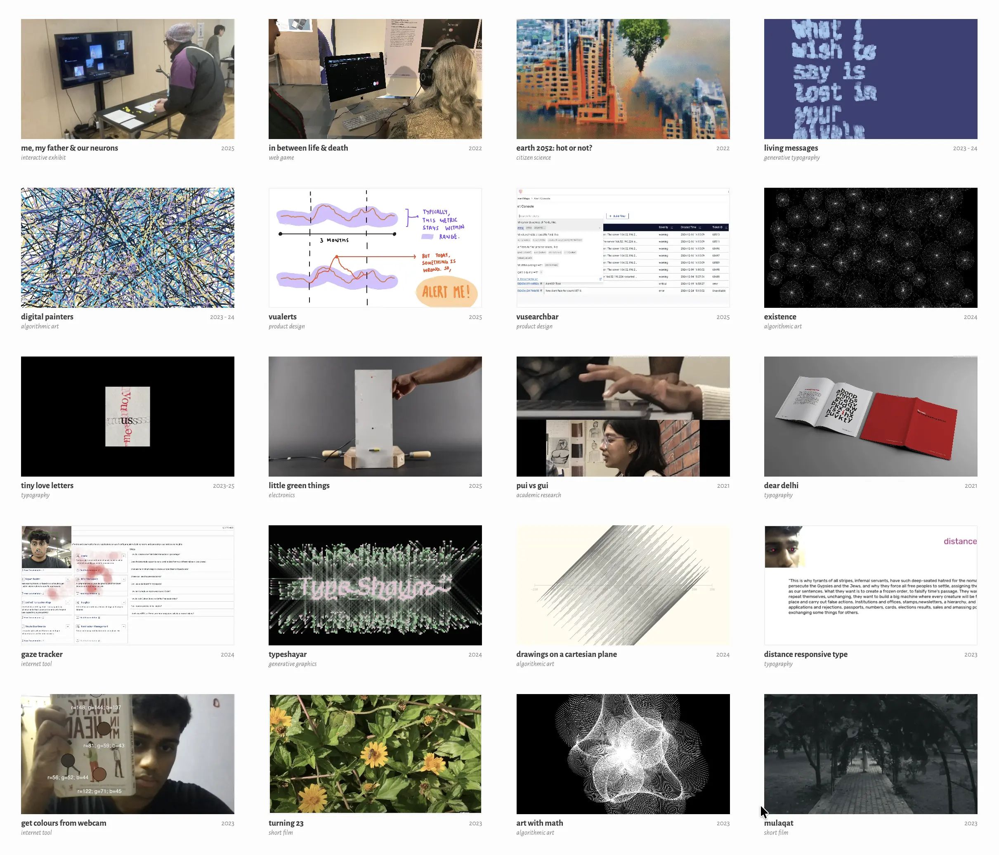
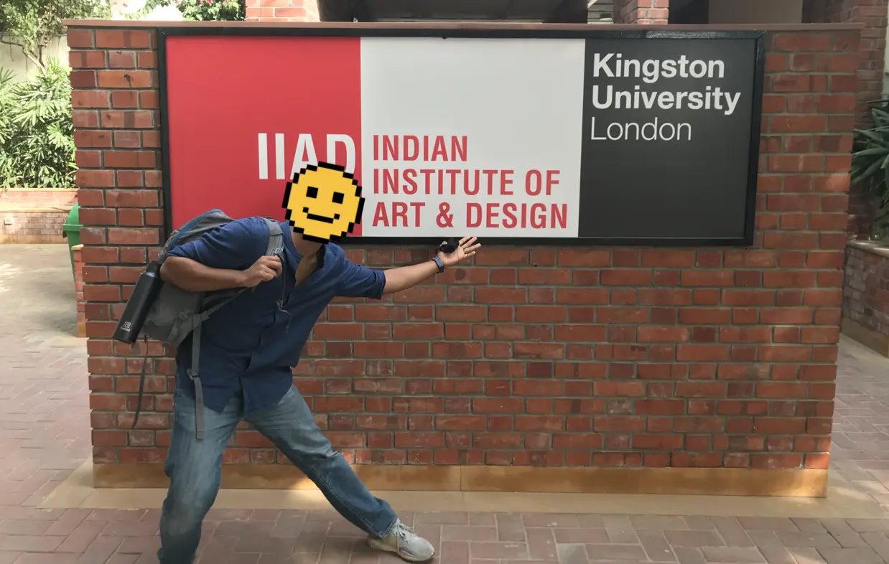
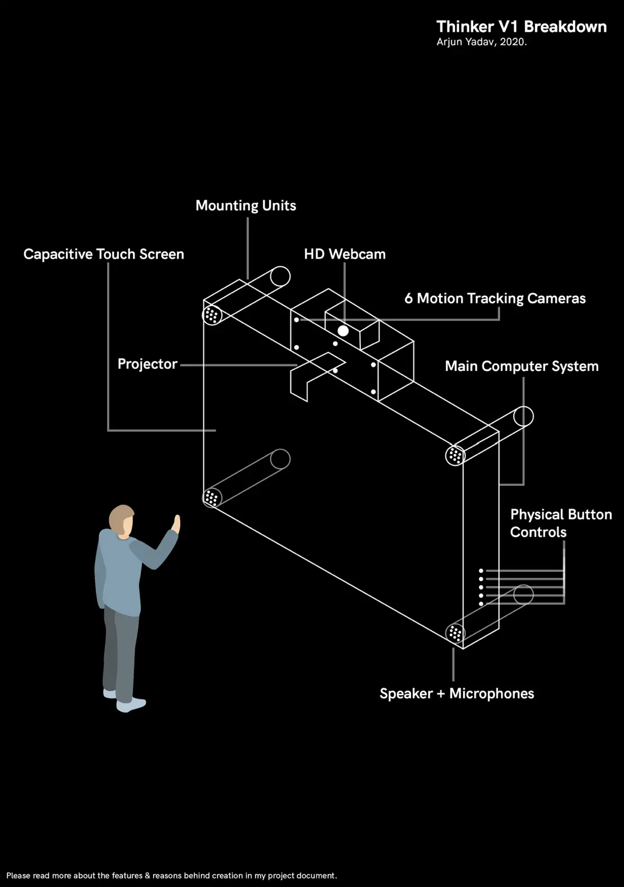
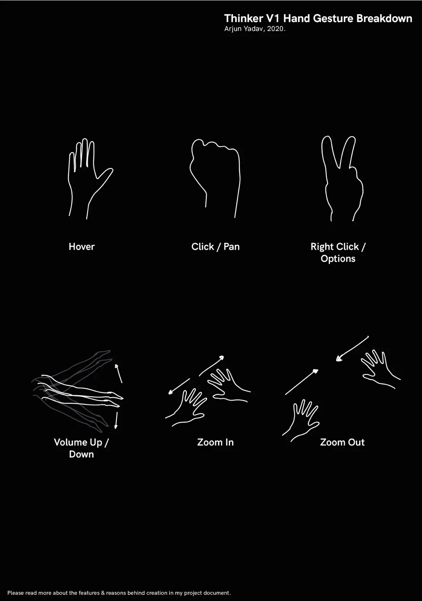

class: middle left # algorithms for expression & truth: .footnote.grey[by arjun; for composition #1;<br>at the rotunda, philadelphia;<br>may, 2026.] <!-- # algorithms,<br>.italic.grey.unbold[for expression & truth:] .footnote.grey[by arjun; for composition #1;<br>at the rotunda, philadelphia;<br>may, 2026.] --> --- class: middle <figure> <p></p> <figcaption>body of work from 2021 - now; screenshot from <a href = "https://arjunmakesthings.github.io">my archive</a>.</figcaption> </figure> ??? a body of work from 2021 - 2024; how i got there; central line of enquiry that threads these projects together & remains what i'm interested in even today. --- class: middle left # .grey.unbold[ch. 1:] frustration. ??? began out of frustration. --- class: middle <figure> <p></p> <figcaption>undergrad; iiad, delhi, india; 2022.</figcaption> </figure> ??? undergraduate student at a small institute of design in india, at a time when design & engineering were considered very separate from each other. so much so that, in a project, a faculty-member told me that "it is not my job to engineer. my job only to think & propose what should ideally happen." --- class: middle <figure> <img src = "https://books.google.com/books/content?id=Zae0jhF_-fMC&pg=PP1&img=1&zoom=3&hl=en&sig=ACfU3U1QGX0dlbJOKRAsv8SjTN1WzWcy0w&w=1280"> <figcaption>graphic design the new basics, by ellen lupton & jennifer cole phillips.</figcaption> </figure> ??? - books from western authors - embracing code as a new creative medium. --- class: middle <figure> <img src = "https://cdn2.penguin.com.au/covers/original/9780262542043.jpg"> <figcaption>code as creative medium, by golan levin & tega brain.</figcaption> </figure> --- class: middle <figure> <div class = "two"> <p></p> <p></p> </div> <figcaption>prototype for thinker; 2021.</figcaption> </figure> ??? the last straw for me in this whole dilemma was when i made this thing for an assignment --- class: middle <figure> <video preload="yes" muted playsinline autoplay nocontrols loop> <source src="../assets/media/common/thinker-vid.mp4" type="video/mp4" /> your browser does not support videos. </video> <figcaption>hand-gestural-prototype; faked using after-effects.</figcaption> </figure> --- class: middle <figure> <video preload="yes" muted playsinline autoplay nocontrols loop> <source src="../assets/media/common/showcase-loop_2.mp4" type="video/mp4" /> your browser does not support videos. </video> <!-- <figcaption>shit i made; 2025.</figcaption> --> </figure> --- class: middle <figure> <img id = "white" src = "https://images.squarespace-cdn.com/content/v1/5d569899bdf59100013c8a11/1565960155874-RGV07Y7HCFTH1DMGCQHZ/logo-square.png"> <figcaption>science gallery.</figcaption> </figure> --- class: middle <figure> <img src = "https://images.squarespace-cdn.com/content/v1/5dc3fd8c20332b6418d95354/cbe2b7db-38f3-4739-bea7-93ad20379a32/about-1.png?format=2500w"> <figcaption>psyche: an online exhibition that explored the human-mind; 2022; science gallery bengaluru.</figcaption> </figure> --- class: middle <figure> <img src = "https://arjunmakesthings.github.io/projects/2022_in-between-life-and-death/Question%20Islands.webp"> <figcaption>psyche: an online exhibition that explored the human-mind; 2022; science gallery bengaluru.</figcaption> </figure> --- class: top, left background-image: url("https://arjunmakesthings.github.io/projects/2022_in-between-life-and-death/Question%20Islands.webp") --- class: middle <figure> <img id = "white" src = "https://arjunmakesthings.github.io/projects/2022_in-between-life-and-death/Island%20Scope.webp"> <figcaption>groups that i could bucket young adults' questions under.</figcaption> </figure> --- class: middle left ## what is the end goal? -- ## why do we do what we do? --- class: middle <figure> <img src = "https://arjunmakesthings.github.io/projects/2022_in-between-life-and-death/Maslow's_Hierarchy.webp"> <figcaption>maslow's hierarchy of human needs, 1943. source: wikimedia commons.</figcaption> </figure> ??? a theory of human motivation by ah maslow, which was one of the pioneering theories of human motivation at the time. the definitiveness of the premise was fascinating to me: a human being would claim a list of common needs for every single individual on the planet. --- class: middle left ## physiological needs -- ## safety -- ## belongingness & love -- ## esteem -- ## self-actualization --- class: middle left ## .grey[physiological needs] -----> level 1<br> ## .grey[safety] -----> level 2<br> ## .grey[belongingness & love] -----> level 3<br> ## .grey[esteem] -----> level 4<br> ## .grey[self-actualization] -----> win (?)<br> --- class: middle <figure> <video preload="yes" muted playsinline autoplay nocontrols loop> <source src="https://arjunmakesthings.github.io/projects/2022_in-between-life-and-death/GamePromo.mp4" type="video/mp4" /> your browser does not support videos. </video> <figcaption>in between life & death; 2022.</figcaption> </figure> --- class: middle ## abstract concept --- class: middle ## abstract concept -> interpret it --- class: middle ## abstract concept -> interpret it -> express concretely --- class: middle ``` js class Food { objectProperties { size, colour, position } eatenStatus { if (eaten == true) { foodDoesNotExist(); } else { foodExists(); } } } ``` <figcaption>pseudocode for physiological needs.</figcaption> ??? simply regaining the energy that the particle expends by breathing & moving. Food was created at different intervals of time, and the particle must be moved close to the food source for it to eat the food (much like the real world). --- class: middle ```js //Free moving companion object if (companionObject.x < 0 | companionObject.x > width) companionObject.xSpeed = companionObject.xSpeed * (-1) if (companionObject.y < 0 | companionObject.y > height) companionObject.ySpeed = companionObject.ySpeed * (-1) //Calculating whether the heroObject is moving towards the companion or not detectMouse() { if (mouseX < companion.x + companion.r / 2 + leeway) & (mouseX > companion.x - companion.r / 2 - leeway) & (mouseY < companion.y + companion.r / 2 + leeway) & (mouseY > companion.y - companion.r / 2 - leeway) { mouseOnTarget = true; } else { mouseOnTarget = false; } } ``` <figcaption>pseudocode for consent: if a particle approaches another too quickly, it is repelled.</figcaption> --- class: middle ## abstract concept -> interpret it -> express concretely ??? premise that became interesting to me artistically. --- class: middle left # .grey.unbold[ch. 2:] exploration. --- class: middle left # .grey.unbold[ch. 2.1:] living messages (2023-2024). .footnote[generative typography experiments.] --- class: middle ## think about text-based communication. ??? personal messages that you write: poems; letters; emails; essays; blogs. personal things feelings; stories; memories. you're forced to express them in non-descript typefaces. --- class: middle left the complete image eludes me<br> and<br> all i have left<br> are<br> fragments of your memory. <figcaption><em>fragments of your memory</em>; from <a href = "https://arjunmakesthings.github.io/notes.html"><em>notes</em></a>, 2022.</figcaption> --- class: middle left # the medium is the message. <figcaption>marshall mcluhan.</figcaption> --- class: middle center <figure> <video preload="yes" muted playsinline autoplay nocontrols loop height = "500"> <source src="https://arjunmakesthings.github.io/projects/2023-24_living-messages/2023_give+take/Clip.mp4" type="video/mp4" /> your browser does not support videos. </video> <figcaption>from <a href = "https://arjunmakesthings.github.io/projects/2023-24_living-messages/page.html"><em>living messages</em></a>, 2023-2024.</figcaption> </figure> --- class: middle center <figure> <video preload="yes" muted playsinline autoplay nocontrols loop height = "500"> <source src="https://arjunmakesthings.github.io/projects/2023-24_living-messages/2024_we-go-around-in-circles/vid.mp4" type="video/mp4" /> your browser does not support videos. </video> <figcaption>from <a href = "https://arjunmakesthings.github.io/projects/2023-24_living-messages/page.html"><em>living messages</em></a>, 2023-2024.</figcaption> </figure> --- class: middle center <figure> <video preload="yes" muted playsinline autoplay nocontrols loop height = "500"> <source src="https://arjunmakesthings.github.io/projects/2023-24_living-messages/2024_its-just-a-wave/vid2.mp4" type="video/mp4" /> your browser does not support videos. </video> <figcaption>from <a href = "https://arjunmakesthings.github.io/projects/2023-24_living-messages/page.html"><em>living messages</em></a>, 2023-2024.</figcaption> </figure> --- class: middle center <figure> <video preload="yes" muted playsinline autoplay nocontrols loop height = "500"> <source src="https://arjunmakesthings.github.io/projects/2023-24_living-messages/2023_what-i-wish-to-say-is-lost-in-your-pixels/vid.mp4" type="video/mp4" /> your browser does not support videos. </video> <figcaption>from <a href = "https://arjunmakesthings.github.io/projects/2023-24_living-messages/page.html"><em>living messages</em></a>, 2023-2024.</figcaption> </figure> --- class: top, left background-image: url("https://arjunmakesthings.github.io/projects/2023-24_living-messages/2023_what-i-wish-to-say-is-lost-in-your-pixels/4.webp") --- class: middle center <figure> <video id = "white" preload="yes" muted playsinline autoplay nocontrols loop height = "500"> <source src="https://arjunmakesthings.github.io/projects/2023-24_living-messages/2023_the-distance-between-us/vid.mp4" type="video/mp4" /> your browser does not support videos. </video> <figcaption>from <a href = "https://arjunmakesthings.github.io/projects/2023-24_living-messages/page.html"><em>living messages</em></a>, 2023-2024.</figcaption> </figure> --- class: middle center <figure> <video id = "white" preload="yes" muted playsinline autoplay nocontrols loop height = "500"> <source src="https://arjunmakesthings.github.io/projects/2023-24_living-messages/2023_stop-the-bleeding-heart/vid.mp4" type="video/mp4" /> your browser does not support videos. </video> <figcaption>from <a href = "https://arjunmakesthings.github.io/projects/2023-24_living-messages/page.html"><em>living messages</em></a>, 2023-2024.</figcaption> </figure> --- class: top, left background-image: url("https://arjunmakesthings.github.io/projects/2023-24_living-messages/2023_stop-the-bleeding-heart/still%20(1).webp") --- class: top, left background-image: url("https://arjunmakesthings.github.io/projects/2023-24_living-messages/2023_stop-the-bleeding-heart/still%20(4).webp") --- class: middle center <figure> <video preload="yes" muted playsinline autoplay nocontrols loop height = "500"> <source src="https://arjunmakesthings.github.io/projects/2023-24_living-messages/2024_dancing-in-the-dark/1.mp4" type="video/mp4" /> your browser does not support videos. </video> <figcaption>from <a href = "https://arjunmakesthings.github.io/projects/2023-24_living-messages/page.html"><em>living messages</em></a>, 2023-2024.</figcaption> </figure> --- class: middle left # .grey.unbold[ch. 2.2:] art with math. .footnote[static images / videos;<br>1000×1000px] --- class: middle <figure> <img id = "white" src = "https://scontent-lga3-3.cdninstagram.com/v/t51.82787-15/542366790_18424101853101718_3476002333264027608_n.webp?_nc_cat=102&ig_cache_key=MzcxMzU4ODI2NTMxMjg1MDU5Nw%3D%3D.3-ccb7-5&ccb=7-5&_nc_sid=58cdad&efg=eyJ2ZW5jb2RlX3RhZyI6IkNBUk9VU0VMX0lURU0ueHBpZHMuMTQ0MC5zZHIucmVndWxhcl9waG90by5DMyJ9&_nc_ohc=j8mCQXDv2xAQ7kNvwEIODaP&_nc_oc=AdrbhJse7qYbYZGn5RUFt1jGeKQjHPaSUKnS8DY1WZRVNW-hukFnohch9jFsSuq4Frs&_nc_ad=z-m&_nc_cid=0&_nc_zt=23&_nc_ht=scontent-lga3-3.cdninstagram.com&_nc_gid=6jIkvV9EAWsqKpBNI9luUg&_nc_ss=7a22e&oh=00_Af5lqUYZxTKLsi69iN4EQX5omUUUwtnikxBYY4Q0Elihow&oe=6A18DEBB"> <figcaption>bird, by hamid naderi yeganeh.</figcaption> </figure> ??? iranian mathematician: hamid naderi yeganeh. --- class: middle <figure> <img id = "white" src = "https://pbs.twimg.com/media/GeWYFKiXUAAxo-2?format=jpg&name=medium"> <figcaption>hamid naderi yeganeh on x: "I drew this hedgehog with mathematical equations."</figcaption> </figure> --- class: middle <figure> <div class = "two"> <img id = "white" src="https://arjunmakesthings.github.io/projects/2023_art-with-math/1/1-code.webp"> <video preload="yes" muted playsinline autoplay nocontrols loop> <source src="https://arjunmakesthings.github.io/projects/2023_art-with-math/1/vid.mp4" type="video/mp4" /> your browser does not support videos. </video> </div> <figcaption>output #1; video-loop; <a href = "https://arjunmakesthings.github.io/projects/2023_art-with-math/page.html">art with math, 2023</a>.</figcaption> </figure> --- class: middle <figure> <div class = "two"> <img id = "white" src="https://arjunmakesthings.github.io/projects/2023_art-with-math/2/2-code.webp"> <video preload="yes" muted playsinline autoplay nocontrols loop> <source src="https://arjunmakesthings.github.io/projects/2023_art-with-math/2/vid.mp4" type="video/mp4" /> your browser does not support videos. </video> </div> <figcaption>output #2; video-loop; <a href = "https://arjunmakesthings.github.io/projects/2023_art-with-math/page.html">art with math, 2023</a>.</figcaption> </figure> --- class: middle <figure> <div class = "two"> <img id = "white" src="https://arjunmakesthings.github.io/projects/2023_art-with-math/3/3-code.webp"> <img src="https://arjunmakesthings.github.io/projects/2023_art-with-math/3/3.webp"> </div> <figcaption>output #3; static image; <a href = "https://arjunmakesthings.github.io/projects/2023_art-with-math/page.html">art with math, 2023</a>.</figcaption> </figure> --- class: middle <figure> <div class = "two"> <img id = "white" src="https://arjunmakesthings.github.io/projects/2023_art-with-math/4/4-code.webp"> <img src="https://arjunmakesthings.github.io/projects/2023_art-with-math/4/4.webp"> </div> <figcaption>output #4; static image; <a href = "https://arjunmakesthings.github.io/projects/2023_art-with-math/page.html">art with math, 2023</a>.</figcaption> </figure> --- class: middle <figure> <div class = "two"> <img id = "white" src="https://arjunmakesthings.github.io/projects/2023_art-with-math/5/5-code.webp"> <img src="https://arjunmakesthings.github.io/projects/2023_art-with-math/5/5.webp"> </div> <figcaption>output #5; static image; <a href = "https://arjunmakesthings.github.io/projects/2023_art-with-math/page.html">art with math, 2023</a>.</figcaption> </figure> --- class: middle left # .grey.unbold[ch. 2.3:] drawings on the cartesian plane. .footnote[algorithmic art; static images;<br>1200px×600px] --- class: middle left ## how far can i take the number line? --- class: middle <figure> <img id = "white" src = "https://upload.wikimedia.org/wikipedia/commons/thumb/7/77/Number_line_with_x_smaller_than_y.svg/960px-Number_line_with_x_smaller_than_y.svg.png"> <figcaption>number line; source: wikipedia.</figcaption> </figure> --- class: middle <figure> <img id = "white" src = "https://upload.wikimedia.org/wikipedia/commons/thumb/0/0e/Cartesian-coordinate-system.svg/500px-Cartesian-coordinate-system.svg.png"> <figcaption>cartesian plane; source: wikipedia.</figcaption> </figure> ??? how much complexity can i make in this simple system that we're introduced to in elementary school? --- class: middle <figure> <img id = "white" src = "https://arjunmakesthings.github.io/projects/2024_drawings-on-a-cartesian-plane/2/2.webp"> <figcaption>output #2; <a href = "https://arjunmakesthings.github.io/projects/2024_drawings-on-a-cartesian-plane/page.html">drawings on a cartesian plane</a>, 2024.</figcaption> </figure> --- class: middle <figure> <img id = "white" src = "https://arjunmakesthings.github.io/projects/2024_drawings-on-a-cartesian-plane/3/3.webp"> <figcaption>output #3; <a href = "https://arjunmakesthings.github.io/projects/2024_drawings-on-a-cartesian-plane/page.html">drawings on a cartesian plane</a>, 2024.</figcaption> </figure> --- class: middle <figure> <img id = "white" src = "https://arjunmakesthings.github.io/projects/2024_drawings-on-a-cartesian-plane/4/4.webp"> <figcaption>output #4; <a href = "https://arjunmakesthings.github.io/projects/2024_drawings-on-a-cartesian-plane/page.html">drawings on a cartesian plane</a>, 2024.</figcaption> </figure> --- class: middle <figure> <img id = "white" src = "https://arjunmakesthings.github.io/projects/2024_drawings-on-a-cartesian-plane/5/5.webp"> <figcaption>output #5; <a href = "https://arjunmakesthings.github.io/projects/2024_drawings-on-a-cartesian-plane/page.html">drawings on a cartesian plane</a>, 2024.</figcaption> </figure> --- class: middle <figure> <img id = "white" src = "https://arjunmakesthings.github.io/projects/2024_drawings-on-a-cartesian-plane/6/6.webp"> <figcaption>output #6; <a href = "https://arjunmakesthings.github.io/projects/2024_drawings-on-a-cartesian-plane/page.html">drawings on a cartesian plane</a>, 2024.</figcaption> </figure> --- class: middle <figure> <img id = "white" src = "https://arjunmakesthings.github.io/projects/2024_drawings-on-a-cartesian-plane/7/7.webp"> <figcaption>output #7; <a href = "https://arjunmakesthings.github.io/projects/2024_drawings-on-a-cartesian-plane/page.html">drawings on a cartesian plane</a>, 2024.</figcaption> </figure> --- class: middle left # .grey.unbold[ch. 2.4:] digital painters. .footnote[custom software experiments] --- class: middle <figure> <div class = "two"> <img src="https://arjunmakesthings.github.io/projects/2023-24_digital-painters/pollock-1.webp"> <img src="https://arjunmakesthings.github.io/projects/2023-24_digital-painters/pollock-2.webp"> </div> <figcaption>left: pollock in action; right: one of pollock's outcomes. source: britannica.</figcaption> </figure> --- class: middle ## series of arbitrary decisions --- class: middle ## series of arbitrary decisions -> intentional & emotionally intense. --- class: middle # 'algorithmize' abstract expressionist painting-processes. --- class: middle <figure> <img src = "https://arjunmakesthings.github.io/projects/2023-24_digital-painters/2023_comp-finds-colour/frame%20(47).webp"> <figcaption>comp finds color; from <a href = "https://arjunmakesthings.github.io/projects/2023-24_digital-painters/page.html">digital painters</a>, 2023-2024.</figcaption> </figure> --- class: middle <figure> <video preload="yes" muted playsinline autoplay nocontrols loop> <source src="https://arjunmakesthings.github.io/projects/2023-24_digital-painters/2023_comp-finds-colour/SCR_1.mp4" type="video/mp4" /> your browser does not support videos. </video> <figcaption>comp finds color video-loop; from <a href = "https://arjunmakesthings.github.io/projects/2023-24_digital-painters/page.html">digital painters</a>, 2023-2024.</figcaption> </figure> --- class: top, left background-image: url("https://arjunmakesthings.github.io/projects/2023-24_digital-painters/2023_comp-finds-colour/frame%20(51).webp") --- class: middle <figure> <video preload="yes" muted playsinline autoplay nocontrols loop> <source src="https://arjunmakesthings.github.io/projects/2023-24_digital-painters/2023_pollock-painter/pollockVid.mp4" type="video/mp4" /> your browser does not support videos. </video> <figcaption>pollock painter video-loop; from <a href = "https://arjunmakesthings.github.io/projects/2023-24_digital-painters/page.html">digital painters</a>, 2023-2024.</figcaption> </figure> --- class: middle <figure> <img src = "https://arjunmakesthings.github.io/projects/2023-24_digital-painters/2023_pollock-painter/pollock1.webp"> <figcaption>pollock painter; from <a href = "https://arjunmakesthings.github.io/projects/2023-24_digital-painters/page.html">digital painters</a>, 2023-2024.</figcaption> </figure> --- class: top, left background-image: url("https://arjunmakesthings.github.io/projects/2023-24_digital-painters/2023_pollock-painter/pollock2.webp") --- class: middle <figure> <img src = "https://arjunmakesthings.github.io/projects/2023-24_digital-painters/2023_pollock-painter/progression.webp"> <figcaption>pollock painter; from <a href = "https://arjunmakesthings.github.io/projects/2023-24_digital-painters/page.html">digital painters</a>, 2023-2024.</figcaption> </figure> ---